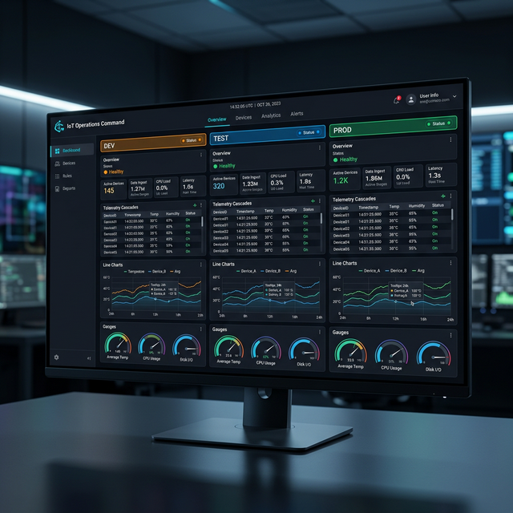
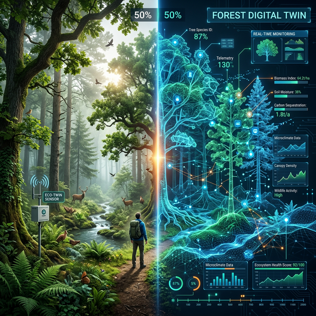

Mózg w Chmurze i jego Cienie
Przyszłość, Wyzwania i Bezpieczeństwo (Wykład 3)
prof. UPP dr hab. inż. Marek Urbaniak
Wydział Inżynierii Środowiska i Inżynierii Mechanicznej


Prolog: Gdzie trafiają sny maszyn?
1. Od gigabajtów do wiedzy
Problem skali danych: „Dane to nowa ropa” brzmi pięknie, dopóki nie musisz jej rafinować.
- Pojedynczy czujnik temperatury w chłodni jest bezwartościowy.
- 10 000 czujników w 100 magazynach w Europie, generujących logi co minutę, tworzy Big Data.
- Gdzie to wszystko składować, filtrować i jak wyciągać użyteczne biznesowo wnioski?
- Odpowiedź: Chmura Obliczeniowa (Cloud Computing) – ostateczna Warstwa Aplikacji w modelu IoT.
Rozdział I: Potęga Ekosystemu IT
2. Platformy korporacyjne (PaaS)
Rozwiązania dostarczane przez gigantów technologicznych, pozwalające na błyskawiczne skalowanie.
- AWS IoT Core: Lider rynku. Potężna integracja z usługami analitycznymi i bazami danych (np. DynamoDB).
- Azure IoT Hub: Silna pozycja w sektorze przemysłowym (IIoT), świetna integracja z Active Directory.
- Obie platformy umożliwiają masową aktualizację oprogramowania wewnętrznego (OTA – Over The Air) dla milionów urządzeń jednocześnie, z zastosowaniem certyfikatów kryptograficznych.
Vendor Lock-in (Złota Klatka)
W 2023 roku Google wyłączyło swoją usługę Google Cloud IoT Core. Zmusiło to tysiące firm do kosztownej i czasochłonnej migracji całych ekosystemów do konkurencji. Oparcie projektu w 100% o jednego dostawcę chmury to poważne ryzyko biznesowe.
3. Narzędzia otwartoźródłowe: niezależność twórców
Jak zachować niezależność i prywatność danych? Odpowiedzią są systemy wdrażane na własnych serwerach (On-Premise).
- ThingsBoard: Profesjonalne pulpity nawigacyjne (dashboardy) obsługujące ogromne potoki danych telemetrycznych z fizyczną izolacją środowisk (dev, test, prod).
- Home Assistant: Integracja lokalna bez zależności od zewnętrznych chmur.
- Node-RED: Wizualne programowanie logiki (Low-code).

Rozdział II: Żywe Organizmy – Smart City
4. Barcelona: Pionierzy „miasta jako komputera”
Co się dzieje, gdy dodamy miastu układ nerwowy?
- Oświetlenie miejskie: 10 000 lamp analizujących ruch pieszych i gasnących inteligentnie na peryferiach – oszczędność 30% budżetu energetycznego rocznie.
- Wywóz odpadów: Czujniki laserowe mierzące poziom zapełnienia kontenerów wytyczają dynamiczną trasę dla śmieciarki, redukując puste przejazdy o 28%.
- Nawadnianie parków: Czujniki wilgotności glebowej sterujące zaworami podlewania – pompa nie uruchomi się dzień po deszczu.
Kto kontroluje dane?
Gdy system ITS (Inteligentny System Transportowy) liczy pojazdy i odczytuje tablice rejestracyjne (LPR) kamerami, kto ostatecznie kontroluje dostęp do statystyk o przemieszczaniu się mieszkańców? To pytanie otwiera dyskusję etyczną.
5. Smart City i Przemysł 4.0 (IIoT)
Jak łączność IoT transformuje przestrzeń miejską i produkcję?
Inteligentne miasta
- Systemy ITS optymalizujące ruch uliczny w czasie rzeczywistym.
- Gęste sieci monitoringu jakości powietrza.
- Inteligentne oświetlenie dopasowujące się do natężenia ruchu.
Przemysł 4.0 (IIoT)
- Predictive Maintenance: Przewidywanie awarii maszyn na podstawie analizy wibracji i temperatur – zanim fizycznie do nich dojdzie.
- Optymalizacja łańcucha dostaw (Supply Chain) z pełną transparentnością lokalizacji paczek.
6. Cyfrowe Bliźniaki (Digital Twins)
Wirtualna reprezentacja fizycznego obiektu, systemu lub całego ekosystemu, zasilana danymi w czasie rzeczywistym.
- To nie tylko wizualizacja 3D. Cyfrowy Bliźniak jest zasilany strumieniem danych z czujników w czasie rzeczywistym – rzutowanych 1:1 na model inżynierski.
- Umożliwia przeprowadzanie symulacji „What If”: co się stanie, jeśli zawór nr 43 ulegnie awarii podczas festiwalu?
- Zastosowania: Od optymalizacji silników odrzutowych po modelowanie dynamiki wymiany gazowej na dużych obszarach leśnych.

Rozdział III: Cienie IoT – Bezpieczeństwo
7. Gdy „rzeczy” stają się bronią DDoS
Paradoks tanich chipów – kupić szybko, włączyć od razu, nie aktualizować nigdy.
- Ograniczone zasoby: Brak mocy obliczeniowej na zaawansowane algorytmy kryptograficzne.
- Dostęp fizyczny: Czujniki w terenie publicznym podatne na sabotaż sprzętowy (np. odczyt pamięci Flash).
- Brak aktualizacji: Miliony urządzeń działają latami na przestarzałym oprogramowaniu z domyślnym hasłem „admin / admin” – tzw. porzucone technologie.
Botnet Mirai (2016)
Złośliwe oprogramowanie (botnet) przejęło kontrolę nad niezabezpieczonymi kamerami IP, dokonując gigantycznego ataku DDoS na infrastrukturę DNS (m.in. Twitter, Netflix).

8. Dobre praktyki bezpieczeństwa (Defence in Depth)
Ochrona systemu IoT musi być wdrażana wielowarstwowo.
- Tożsamość: Szyfrowanie asymetryczne (X.509) dla TLS/DTLS.
- Aktualizacje OTA: Zdalne łatanie podatności.
- Segmentacja sieci (VLAN): Izolowanie czujników IoT od głównej sieci biurowej/serwerów.
- Secure Boot: Blokada nieautoryzowanego kodu.
9. Prywatność w epoce mikrofonów zawsze włączonych
Kto nas słucha, liczy i mierzy? Profilowanie konsumenckie na danych z warstw IoT.
- Inteligentne liczniki energii mierzące zużycie co 10 sekund potrafią na podstawie analizy pików zużycia określić, kiedy włączasz czajnik (07:30), kiedy wychodzisz z domu (08:30) i kiedy wracasz (14:00). To nie jest fikcja – to dane dostępne dostawcy energii.
- Zabawki IoT wysyłające nieszyfrowane nagrania głosowe dzieci do chmur w obcych jurysdykcjach – częsty powód wycofań produktów z rynku europejskiego (np. lalka „My Friend Cayla”).
- Opaski fitness profilujące puls i aktywność mogą posłużyć do automatycznego podniesienia składki ubezpieczenia zdrowotnego na podstawie odczytów wskazujących na siedzący tryb życia.
Epilog: Podsumowanie Trylogii o Rzeczach
10. Bilans korzyści i wyzwań na nową dekadę
Obiecujące zyski
- Precyzyjne rolnictwo: Redukcja zużycia wody nawet o 50% dzięki pomiarom „na kroplę do celu” w nawadnianiu upraw.
- Predictive Maintenance: Czujniki wibracji chronią turbiny – przewidzą awarię szybciej, niż stopi się łożysko nośne silnika.
- Edge AI (AIoT): Modele uczenia maszynowego (np. TensorFlow Lite) działające bezpośrednio na mikrokontrolerach, bez potrzeby łączności z chmurą.
Wyzwania
- E-Waste: Miliardy jednorazowych urządzeń z baterią niemożliwą do wymiany, zaklejonych w plastikowej obudowie – góra elektroniki jednorazowej.
- Energy Harvesting: Konieczność odejścia od klasycznych baterii na rzecz zasilania z otoczenia (różnice temperatur, wibracje, fale radiowe).
- Etyka i regulacje: Kto jest właścicielem danych generowanych przez „rzeczy” w twoim domu?
11. Przyszłość: 6G i nowe paradygmaty
W jakim kierunku zmierza telemetria i systemy wbudowane?
- Integracja 6G: Oczekiwane opóźnienia na poziomie sub-milisekund i gigabitowe przepustowości pozwolą na błyskawiczną synchronizację Cyfrowych Bliźniaków o wysokiej rozdzielczości.
- Konwergencja AI + IoT: Inteligentne urządzenia podejmujące decyzje autonomicznie, bez ciągłej łączności z chmurą.
- Regulacje prawne: Unia Europejska wprowadza Cyber Resilience Act, nakładający obowiązek aktualizacji bezpieczeństwa przez cały cykl życia produktu IoT.
12. Zakończenie cyklu wykładów
IoT zbudowali inżynierowie, którzy chcieli zaoszczędzić sobie chodzenia po schodach po Coca-Colę.
Dziś ta sama filozofia steruje miastami, fabrykami i systemami ratującymi życie.
Jaką inteligentną rzecz zaprojektujesz i zbudujesz?
Dziękuję za uwagę.
Internet Rzeczy – IoT (Wykład 3)